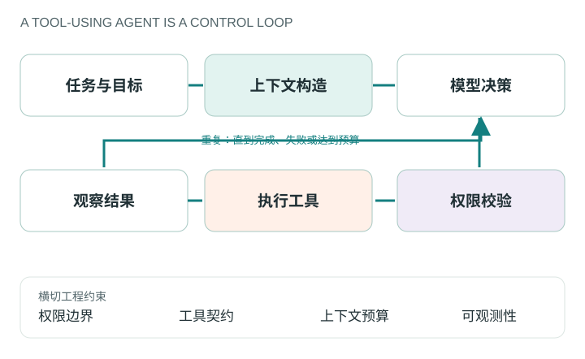

理解机制
01–05：从历史问题与验证方法，到最小 Agent Loop、分层架构及 Tool Use。
进入章节 →从 Tool Use 消息协议，到权限、安全边界和上下文编排，用可以逐层验证的图解与代码，建立 Coding Agent 的完整心智模型。
共 28 章 · 前 10 章已重构 · 后 18 章保留待复审

按主题筛选或查找关键概念；已明确标注首批精修和仍需复审的章节。
显示 28 / 28 章
代码补全与 Agent 的区别 · 环境反馈闭环 · Harness 的职责边界 · 证据分级
官方文档与黑盒观察 · 版本化实验记录 · 合法且可复现的工作区 · 安全与证据边界
Messages API 完整历史 · 参数校验与安全工具 · stop_reason 状态机 · 离线单元测试
四层教学架构 · 生命周期与权限 · Hooks / Skills / Subagents / MCP · 源码事实边界
tool_use / tool_result · JSON Schema 校验 · 多工具结果关联 · Streaming 与失败路径
BashPreview / Read / Write / Edit · 工作区与权限边界 · 原子写入与唯一匹配 · 离线故障测试
应用规则与项目约定 · SKILL.md 加载边界 · 缓存前缀设计 · 前缀与权限离线测试
stop_reason 明确出口 · tool_result 原子性 · 事件生成器 · 取消与故障注入
任务依赖 DAG · pending / in_progress 转换 · 验收证据 · 环检测与状态测试
Token Counting · Prompt Caching / Compaction · 结构化 checkpoint · 预算决策器
滑动窗口截断 · 自动摘要生成 · 对话持久化 · Haiku降本策略
AgentTool源码 · fork机制 · 脏上下文隔离 · 6种TaskType
进程隔离方案 · 并行调度 · 结果序列化 · v3 Agent (450行)
SkillTool实现 · CLAUDE.md三层级 · 懒加载策略 · 优先级合并
7种权限模式 · 规则链评估 · ML分类器独立评估 · deny优先原则
白名单/黑名单 · 模式切换 · 用户确认回调 · 危险操作拦截
4层纵深防御 · 命令白名单 · Shell注入防护 · 文件系统边界
协议生命周期 · 3种传输层 · Tool Annotations · Elicitation机制
STDIO Server管理 · Streamable HTTP · 工具发现与注册 · 多Server聚合
Prefix复用率92% · 预热调用设计 · Cache断点算法 · 模型Cache差异
SKILL.md解析器 · 触发匹配 · 动态Prompt构建 · v4 Agent (550行)
3种Finish模式 · Meta-Harness演进 · Arize多模型对比 · Adaptive Harness
3层日志体系 · Token消耗追踪 · 时间线可视化 · 可观测性面板
Cache命中率调优 · 并行工具调用 · Haiku vs Sonnet · 端到端优化案例
国内外教程全景 · 开源工具链 · 竞品对比 · 学习路径推荐
Default-FAIL契约 · Fresh-Context Evaluator · Kill Switch/Steering · Meta-Harness
10步模块集成 · CLI交互界面 · 配置系统 · 端到端演示
28章知识图谱 · 9大架构模式速查 · 进阶学习方向 · Agent工程师素养
证据边界：官方可验证的接口、产品可观察行为与本教程构建的教学 Harness 不是同一种证据。11–28 为迁移旧稿，尚未完成新一轮事实复核，内部实现常数及未经引用的源码结论仅供辨析。